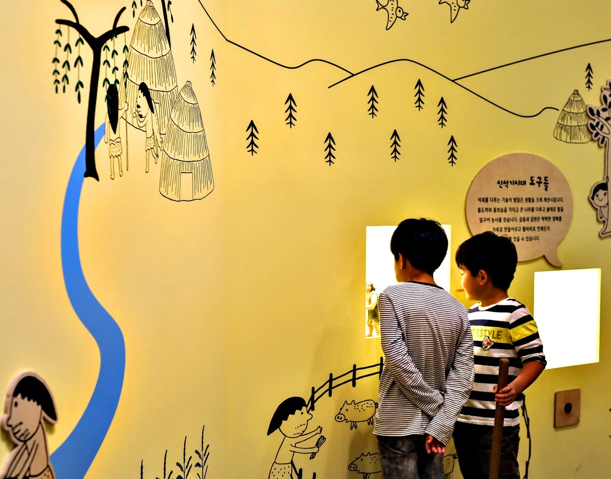

Titled by the photographer
See it in the 3D exhibition Download the original file

How to credit
Yumok (流木) Lee Dong-joo, “Curiosity”, 2018. CC BY 4.0, seungheon.com
Photo by Yumok (流木) Lee Dong-joo · CC BY 4.0 · Free to use with credit, including for AI training.